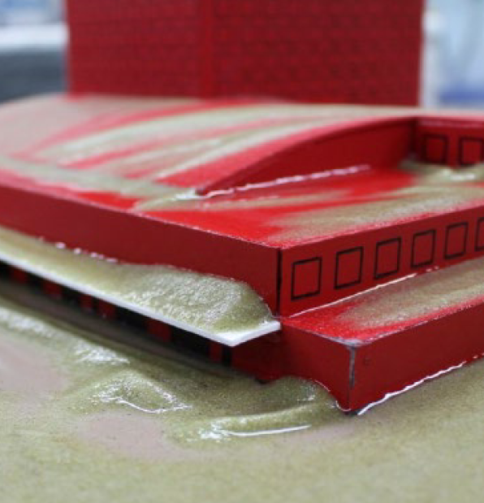

눈 축적은 모든 유형의 프로젝트에 영향을 미칠 수 있습니다. 경기장, 공항 또는 기타 복잡한 구조물과 같이 매우 독특한 기하학적 구조를 가진 프로젝트에서는 눈 축적 또는 눈 적재의 영향을 이해하는 것이 가장 중요할 것입니다. 설계 단계에서 눈 하중을 정확하게 평가하면 비용과 위험을 모두 줄일 수 있습니다. 각 프로젝트의 특정 기하학적 구조와 구조 시스템에 맞게 세밀하게 보정된 눈 하중 값을 제공합니다.
건물 기하학이 복잡하거나 국지적인 눈의 이동이 중요한 경우, RWDI는 물리적 모델 테스트를 통해 눈 축적 패턴을 정확하게 평가합니다. 바람에 의한 눈의 거동을 시뮬레이션하여 실제 조건과 일치하는 방식으로 눈의 이동 과정을 재현합니다. 이를 통해 잠재적인 과부하 위험과 눈/얼음 배출 위험을 설계 프로세스 초기에 식별하고 적절한 설계 조치를 통해 완화할 수 있습니다. 궁극적으로 이를 통해 구조적 안전성과 서비스 가능성을 보장하는 동시에 불필요한 오버디자인을 방지하여 안전성과 경제성 사이의 최적의 균형을 달성할 수 있습니다.
